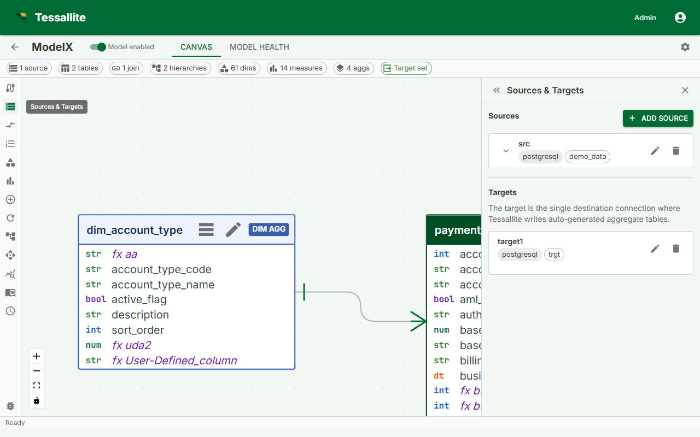

Add Tables to a Model

What this covers
Before you can define dimensions, measures, or aggregates, you must add the source tables you intend to use into the model. This article explains how to navigate to the Model Builder, browse the schema, add tables, and choose the correct table type for each one.
Before you start
- A project must exist and its data source connection must be working. See Create a Project and Add a Data Source.
- You must be signed in as a Modeller or Tenant Admin on the project.
Steps
- Open the project from the workspace dashboard.
- Click Model Builder in the project navigation. The Model Builder opens with the Canvas (center), Toolbelt (left), Drawer (right), and Summary Bar (bottom).
- In the Toolbelt, click Add Table. The Drawer opens showing the schema browser.
- Expand a schema in the browser to see its tables.
- Click a table name to select it. The Drawer shows the table's columns and a Table type selector.
- Choose the correct table type (see the reference below).
- Click Add to Model. The table appears as a node in the Canvas.
- Repeat for each table you need.
Table type reference
Choosing the right type determines how Tessallite constructs the aggregate grain — the combination of columns used when building pre-aggregated summary tables.
| Table type | When to use | Example | Included in aggregate grain? |
|---|---|---|---|
fact | The central transaction or event table. Every model must have exactly one. Contains numeric measures and foreign keys to dimension tables. | orders, page_views, sensor_readings | Yes |
dim_aggregate | A dimension table that participates in the aggregate grain. Use when you want pre-aggregation to group by columns in this table. | dim_date, dim_product | Yes |
dim_detail | A dimension table used only for filtering or labeling. Its columns are not included in aggregate grain. | dim_customer, dim_employee | No |
A model must have exactly onefacttable. If you mark a second table asfact, the Health tab shows a validation error and the model cannot be published.
What the Canvas shows
Each table appears as a card showing the table name and type badge. Tables with no join are shown with a dashed border and flagged as a warning in the Health tab until all tables are joined.
Click a table-node header to focus the matching row in the Sources panel — the source expands and the row is briefly highlighted. From there, the Edit pencil opens the unified table editor (General · Columns · Attributes) where you can change the type, rename the alias, edit columns, and manage user-defined attributes. See Dimension Aliases for the full editor walkthrough.
Removing a table
Select the table in the Canvas, then click Remove from Model in the Drawer. All joins, dimensions, and measures referencing that table are also removed. This action cannot be undone.